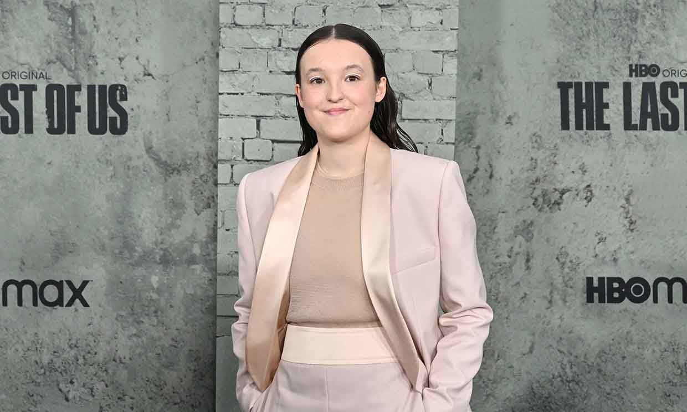
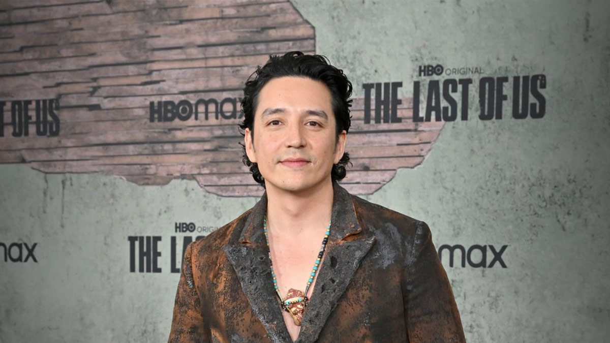
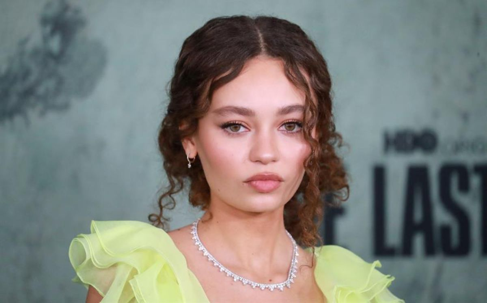
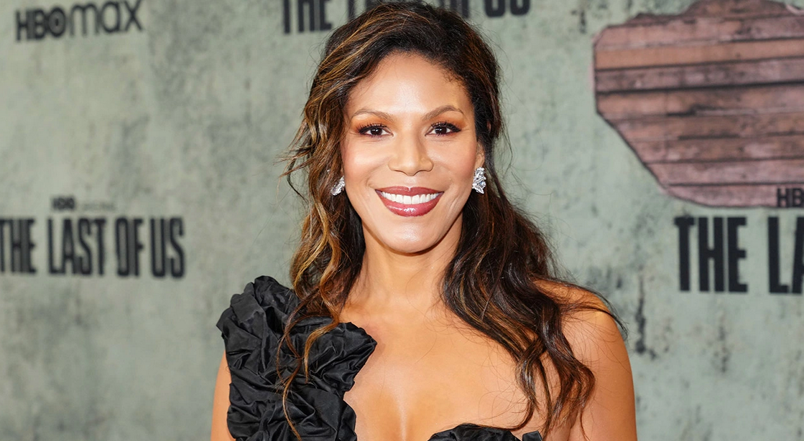

El chileno Pedro Pascal es el protagonista principal y quien le da vida a Joel, un endurecido superviviente, atormentado por traumas y fracasos del pasado, que debe atravesar unos Estados Unidos devastados por la pandemia, mientras protege a una niña que representa la última esperanza de la humanidad.

Ellie - Bella Ramsey
La actriz británica Bella Ramsey es Ellie, una huérfana de 14 años que sólo conoció un planeta devastado y tiene un rol fundamental en la historia: es la clave para salvar el mundo ya que Ellie es una adolescente que parece ser imnune a la infección por el hongo Cordyceps, una de las pocas personas que resiste a esta enfermedad.

Tommy - Gabriel Luna
Gabriel Luna es el actor que le da vida al personaje de Tommy, el hermano menor de Joel, un ex soldado de la Guerra del Golfo que no perdió su sentido del idealismo y la esperanza en un mundo mejor. Según Luna, el personaje de Tommy tiene una profundidad que todavía no se dejó ver en la serie de The Last of Us

Sarah - Nico Parker
Nico Parker es la actriz que interpreta a Sarah, personaje a través del cual podemos llegar a ver el entorno de Joel antes de que se desatara el caos con la pandemia ocasionada por el hongo Cordyceps. Parker destaca lo interesante que resulta ver el cambio antes y después del brote.

Marlene - Merle Dandridge
Merle Dandridge toma el rol de Marlene, líder de las Luciérnagas, un movimiento de resistencia que lucha por la libertad contra un régimen militar opresor. (Dandridge puso voz en inglés al personaje de Marlene en los videojuegos "The Last of Us" y "The Last of Us Part II").